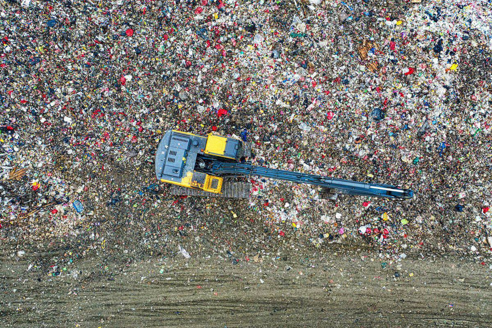
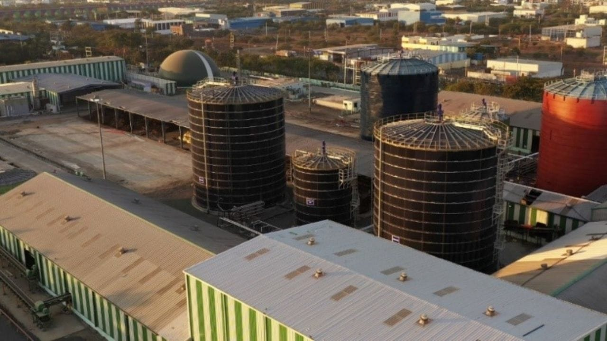
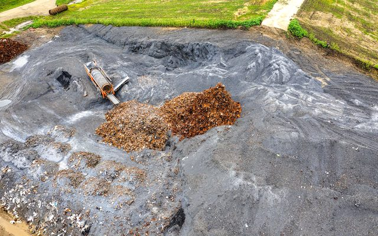
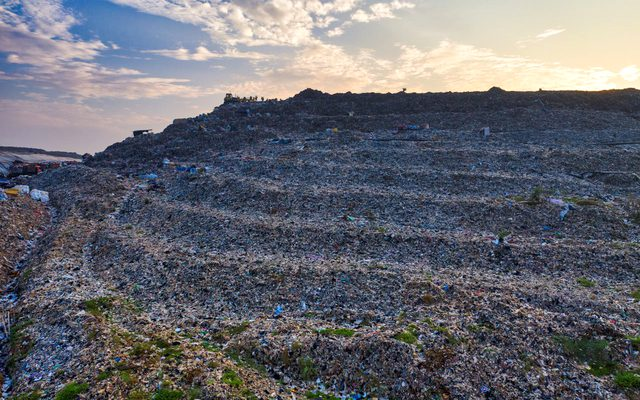
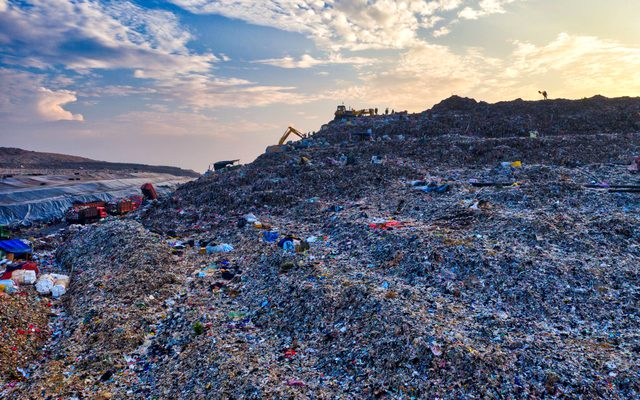
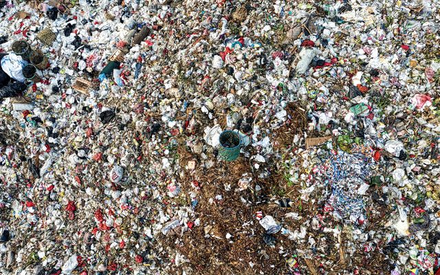
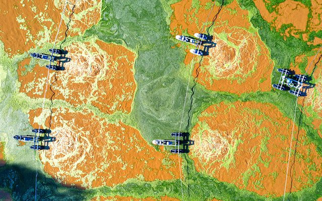
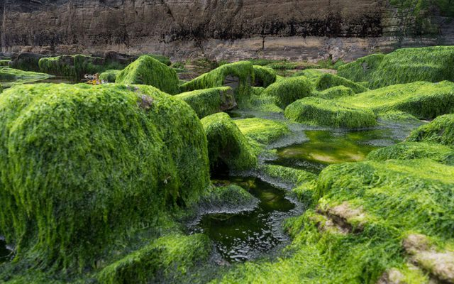
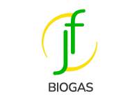

सुविकल्प: Mine Repurposing Tool
Select factors and sub-factors to discover suitable repurposing options for your mining site
![Coal Controller Organisation emblem]()


Covers the project concept, strategic rationale, site suitability and technical specification matrix, and indicative scale models — from a pilot organic processing zone on 1–5 ha to a regional waste-to-resource and engineered landfill ecosystem at 100 ha+.
This concept proposes the development of Landfill + Compost & Biogas Zones on closed, reclaimed, or repurposed coal mine land as part of a sustainable mine-closure and post-mining land-use strategy. The objective is to convert suitable under-utilized mine land into an integrated solid-waste processing and resource-recovery facility.
Components include: scientific / engineered landfill for inert and process rejects; windrow / aerated composting for segregated organic waste; biomethanation / compressed biogas generation from wet biodegradable waste; leachate collection and treatment; landfill gas capture where applicable; compost / digestate curing and quality control; material recovery for recyclables before landfilling; green buffers, odour-control systems, and environmental monitoring; and local livelihood creation through facility operations, compost handling, waste segregation, logistics, and green jobs.
Unlike open dumping, an integrated facility: reduces the quantity of waste finally landfilled; generates compost, biogas / Bio-CNG, and soil conditioner; supports methane reduction and climate objectives; enables controlled disposal of inert rejects; can be developed in phased cells; and is compatible with large, bufferable mine-closure land parcels.
Key Reference: Indore's GOBARdhan Bio-CNG plant processes ~550 TPD of segregated organic MSW, producing ~17,000 kg of Bio-CNG and ~100 tonnes of compost per day — demonstrating commercial viability at scale.
The following matrix provides a structured checklist for assessing the suitability of the proposed site for the selected repurposing option. It identifies the key physical, technical, environmental, infrastructure, legal, and owner-side readiness parameters that should be reviewed before the project is advanced to the next stage of development. The purpose of this matrix is to help the project owner understand existing site conditions, technical requirements, potential constraints, and preparatory actions required before feasibility studies, approvals, or tendering are initiated.
| Category | What to Assess / Prepare | Why It Matters | Owner-Side Readiness |
|---|---|---|---|
| Land Status | Closure status, ownership, permissible post-mining use, land-use compatibility | Legal viability and project approval | Closure and land-use note |
| Mine Safety | Subsidence, slope stability, mine voids, old dumps, spontaneous heating / fire risk | Ensures landfill cells, compost pads, and biogas units are safely located | Geotechnical and safety screening |
| Hydrogeology | Groundwater depth, aquifer vulnerability, flow direction, nearby wells | Critical for landfill liner design and pollution prevention | Hydrogeological report |
| Flood Risk | Floodplain mapping, stormwater flow, drainage paths | Landfills should avoid flood-prone areas and wetlands | Flood and drainage assessment |
| Soil Condition | Bearing capacity, permeability, contamination, suitability for embankments | Determines liner system, foundation, and capping design | Soil investigation report |
| Buffer Availability | Distance from settlements, schools, hospitals, water bodies, eco-sensitive zones | Odour, gas, bird, vector, dust, and public safety management | Buffer zoning plan |
| Waste Catchment | Nearby ULBs, mining townships, markets, institutions, industries | Determines waste quantity and project scale | Waste supply assessment |
| Waste Composition | Wet waste, dry waste, inert fraction, C&D waste, rejects, seasonal variation | Determines composting, biogas, and landfill capacity | Waste characterization study |
| Segregation Readiness | Source segregation, collection system, wet/dry stream separation | Biogas and compost require clean biodegradable feedstock | Segregation improvement plan |
| Access | Truck routes, weighbridge location, road width, turning radius | Supports continuous waste movement and avoids public nuisance | Traffic and logistics plan |
| Leachate Management | Leachate collection, treatment, recirculation / disposal | Core landfill pollution-control requirement | Leachate treatment concept |
| Gas Management | Landfill gas vents, gas wells, flare / utilization, biogas purification | Controls methane, odour, explosion risk, and energy recovery | Gas management plan |
| Composting Technology | Windrow, aerated static pile, in-vessel, curing area, screening | Determines land requirement, odour risk, and compost quality | Compost technology note |
| Biogas Technology | Wet / dry anaerobic digestion, CSTR, plug-flow, pre-treatment, gas cleaning | Determines Bio-CNG / power output and CAPEX | Biomethanation DPR note |
| Environmental Monitoring | Groundwater wells, air quality, odour, noise, leachate, compost quality | Compliance and community confidence | Monitoring framework |
| Safety | Fire, methane, confined spaces, vector control, heavy vehicle movement | Worker and public safety | Safety and emergency plan |
| Compliance | SWM Rules, SPCB consent, environmental clearance if applicable, PESO / gas approvals | Legal operation | Approval matrix |
The following matrix presents an indicative relationship between available site area, project scale, technical configuration, and likely development potential. It is intended to support preliminary planning by helping the project owner identify the appropriate scale and configuration for the proposed repurposing option. The values and recommendations are indicative and should be refined through detailed feasibility studies, site surveys, engineering assessments, and relevant technical and commercial evaluations.
CPHEEO's MSW Management Manual provides design guidance for sanitary landfills, composting, and biomethanation. SBM Urban's advisory for CBG plants notes that a 100 TPD feedstock plant may require ~16,000–20,000 sq. m (4–5 acres).
| Land Area | Recommended Scale | Configuration | Use Case |
|---|---|---|---|
| 1–5 ha | Pilot organic processing zone | 5–25 TPD composting / small biomethanation, leachate tank, curing area, green buffer, no major landfill except small inert storage | Mine township / institutional wet-waste processing |
| 5–20 ha | Decentralized compost + biogas facility | 25–100 TPD wet-waste processing, 5–25 TPD biogas module, windrow composting, material recovery, small engineered reject cell | Nearby ULB or mining cluster |
| 20–50 ha | Integrated landfill + compost + biogas facility | 100–300 TPD processing, 50–150 TPD composting / biogas, phased sanitary landfill cells for rejects, leachate treatment, weighbridge, lab | District / cluster-level waste management |
| 50–100 ha | Large integrated solid-waste management park | 300–750 TPD MSW handling, large composting, Bio-CNG plant, MRF, RDF rejects handling, engineered landfill, green buffer, training centre | PPP / DBFOT / concession model |
| 100 ha+ | Regional waste-to-resource and engineered landfill ecosystem | 750 TPD+ regional waste facility, multi-cell landfill, Bio-CNG, composting, MRF, landfill gas management, solar, greenbelt, eco-monitoring | Just-transition flagship and regional waste infrastructure |
Describes the seven implementation models for landfill + compost + biogas projects and the comparative assessment driving model selection — balancing mine-owner control, environmental safeguards, private investment, waste-processing expertise, and community livelihood.
The following table outlines the possible implementation models that may be considered for developing the proposed repurposing project. These models differ in terms of ownership structure, funding responsibility, private sector participation, operational control, and long-term risk allocation. The purpose of this table is to help the project owner compare broad development routes and select an implementation approach that aligns with its financial capacity, institutional preference, risk appetite, and long-term asset management objectives.
| Main Group | Model | Core Feature | Broad Suitability |
|---|---|---|---|
| Owner-Funded | EPC | Mine owner funds and owns the landfill / compost / biogas infrastructure; contractor designs and builds | Suitable for basic infrastructure: landfill cell, compost pad, drains, roads, weighbridge, fencing, leachate tank, and initial processing sheds |
| Owner-Controlled Operations | EPC + O&M / FM | Mine owner retains ownership and control while an agency operates and maintains the landfill, composting, and biogas systems | Highly suitable where the owner wants strong control over compliance, local employment, community welfare, environmental monitoring, and facility performance |
| Private Investment with Transfer | BOOT | Private developer finances, builds, and operates the facility for a concession period, then transfers assets | Suitable for Bio-CNG, composting, leachate treatment, and engineered landfill facilities with tipping fee and revenue generation |
| Private Ownership | BOO | Private developer builds, owns, and operates on leased / permitted land | Suitable for commercially driven composting or Bio-CNG projects; less preferred where land stewardship and community benefit are key |
| Structured PPP | DBFOT | Private concessionaire designs, builds, finances, operates, and transfers the integrated facility | Very suitable for large landfill + compost + biogas parks requiring private finance, technical capability, long concession period |
| Land-Based Concession | Concession / LDO | Mine owner retains land ownership while operator develops and operates under lease / concession terms | Very suitable where the owner wants land control, private operational expertise, revenue sharing, and livelihood obligations |
| Multi-Partner Integrated | Hybrid | Combines mine-owner land, ULB waste supply, private operator, CSR / public funding, SHG participation, and technical partners | Most suitable for balancing mine-closure objectives, waste processing, community livelihood, ESG outcomes, and owner revenue |
The following comparative assessment evaluates the major implementation models across key decision parameters such as investment requirement, ownership control, financing responsibility, contractual complexity, risk transfer, and long-term economic benefit. This matrix is intended to support early-stage decision-making by highlighting the relative strengths and limitations of each model. The final choice of model should be guided by the specific circumstances of the project, including its scale, commercial viability, applicable policy framework, and the owner's institutional preference.
| Parameter | EPC | EPC+O&M | BOOT | BOO | DBFOT | Concession | Hybrid |
|---|---|---|---|---|---|---|---|
| Owner upfront investment | High | High–Moderate | Low–Moderate | Low | Low–Moderate | Low–Moderate | Variable |
| Private financing needed | Low | Low | High | High | High | Moderate–High | Variable |
| Land ownership retained | Yes | Yes | Land retained | Limited | Land usually retained | Land retained | Usually retained |
| Welfare / community suitability | High | Very High | High if mandated | Moderate | High | Very High | Very High |
| Local livelihood suitability | Moderate | Very High | High | Moderate | High–Very High | Very High | Very High |
| Revenue potential | Low–Moderate | Moderate–High | High | High | High | Moderate–High | Variable–High |
| Long-term O&M suitability | Low–Moderate | High | High | High | Very High | Very High | Very High |
| Overall suitability | Moderate | High | High | Moderate | Very High | Very High | Most Suitable |
The following table explains how major project responsibilities are typically allocated under different implementation models. It covers key functional areas such as site availability, financing, design and construction, regulatory approvals, operation and maintenance, revenue collection, asset ownership, and end-of-term transfer. This helps clarify the respective roles of the project owner, private developer, EPC contractor, operator, or concessionaire, and supports the preparation of tender documents and contractual structures.
| Responsibility Area | EPC | EPC+O&M | BOOT | DBFOT | Concession | Hybrid |
|---|---|---|---|---|---|---|
| Site / land availability | Mine Owner | Mine Owner | Mine Owner / authority | Mine Owner / authority | Mine Owner / authority | Mine Owner / shared |
| Waste catchment mapping | Owner / consultant | Owner + O&M agency | Developer / consultant | Concessionaire | Concessionaire | Shared |
| Landfill cell design | Owner / consultant | Owner + O&M agency | Developer / expert | Concessionaire | Concessionaire / operator | Shared |
| Biogas / Bio-CNG plant | EPC contractor / owner | Owner / O&M agency | Developer | Concessionaire | Concessionaire / operator | Shared / tech partner |
| Day-to-day operations | Mine Owner | O&M agency | Developer | Concessionaire | Concessionaire / operator | SHG / operator / concessionaire |
| Waste supply agreements | Owner / ULB | Owner + O&M agency | Developer if mandated | Concessionaire | Concessionaire + ULB | Shared |
| SHG / waste-picker integration | Mine Owner | O&M agency / NGO | Developer if mandated | Contract-based | Concessionaire / NGO | Core feature |
| Environmental compliance | Mine Owner | Owner + O&M agency | Developer | Concessionaire | Concessionaire | Shared |
| Revenue collection | Mine Owner | Owner / operator on behalf | Developer during concession | Concessionaire | Concessionaire / shared | Shared |
Covers funding logic by model, revenue generation streams — tipping fee, compost sale, Bio-CNG / power, recyclables recovery, carbon / ESG value — and livelihood outcomes including SHG, waste-picker, and local employment integration by model.
The following table presents the broad funding logic for each implementation model. It explains who is expected to finance the project, the level of owner-side funding requirement, and the commercial rationale behind each structure. This section is intended to help the project owner assess whether the project is more suitable for owner-funded development, private investment, public-private partnership, lease or concession structure, or a hybrid funding arrangement.
| Model | Funding Source | Owner Funding Requirement | Suitability |
|---|---|---|---|
| EPC | Mine owner budget / mine closure fund / CSR / public funds | High | Suitable for basic landfill cell, compost pad, leachate tank, roads, drains, weighbridge, fencing |
| EPC + O&M / FM | Mine owner budget + O&M budget + CSR + ULB tipping fee | High–Moderate | Strong fit where owner wants control over welfare, compliance, waste-worker integration, and facility maintenance |
| BOOT | Private developer capital + possible CSR / VGF / grant + assured waste supply | Low–Moderate | Suitable for Bio-CNG, composting, and landfill support infrastructure with transfer at end |
| BOO | Private developer capital | Low | Suitable for commercially driven Bio-CNG or composting; less preferred where community control is important |
| DBFOT | Private concessionaire + public support + ULB tipping fee + VGF | Low–Moderate | Suitable for large integrated landfill + compost + biogas parks with private finance |
| Concession / LDO | Private operator / ULB / NGO / CSR / blended finance / tipping fee | Low–Moderate | Very suitable for community-linked waste processing with lease fee and revenue sharing |
| Hybrid | Owner + CSR + ULB tipping fee + government schemes + private operator + SHG/FPO + grants | Variable | Most suitable for balancing mine-closure, landfill compliance, composting, Bio-CNG, livelihood, and owner revenue |
The following table explains how revenue may be generated under different implementation models and identifies who is likely to receive the principal project income. It also describes the nature and extent of the financial benefit available to the project owner, whether through direct project revenue, cost savings, lease income, concession fees, revenue sharing, service charges, or eventual asset transfer. This comparison is intended to support the selection of a commercially appropriate model for the proposed repurposing project.
| Model | How Revenue is Generated | Who Receives Main Revenue | Owner's Financial Benefit |
|---|---|---|---|
| EPC | Tipping fee, compost sale, recyclables, Bio-CNG / power if installed, landfill user charges, training fees | Mine Owner | Full revenue retained; owner bears full CAPEX, O&M, compliance, and market risk |
| EPC + O&M / FM | Tipping fee, compost, Bio-CNG / electricity, recyclables, carbon / ESG benefits, training | Mine Owner after O&M agency payments | High benefit; retains revenue while outsourcing technical management |
| BOOT | Tipping fee, Bio-CNG, compost, electricity, landfill charges, recyclables, carbon during concession | Developer / concessionaire during concession | Lease rent, concession fee, revenue share, and asset transfer at end |
| DBFOT | Structured revenue from tipping fee, Bio-CNG, compost, electricity, recyclables, landfill fee, carbon | Concessionaire during concession | Concession fee, lease rent, revenue share, and asset transfer at end |
| Concession / LDO | Landfill gate fee, compost, biogas / Bio-CNG, recyclables, ULB service charges, training | Concessionaire / operator as per agreement | Lease rentals, revenue share, improved land value, socio-economic benefits |
| Hybrid | Mixed: tipping fee, compost, Bio-CNG, electricity, recyclables, grants, CSR, carbon / ESG, training | Shared between owner, operator, SHG/FPO, NGO, concessionaire | Variable to high through revenue share, reduced O&M burden, ESG gains |
The following table assesses the likely local livelihood and employment potential of each implementation model. It considers the extent to which each model can support construction-phase jobs, long-term operational employment, local procurement opportunities, skill development, community participation, and associated support services. This section is particularly relevant where the repurposing project is expected to contribute to post-mining or post-operational economic transition and sustained local community benefit.
| Model | Local Job Potential | Why | Overall Suggestibility |
|---|---|---|---|
| EPC | Moderate | Short-term construction jobs; long-term jobs depend on owner-led operations after completion | Moderate |
| EPC + O&M / FM | High–Very High | Sustained employment: weighbridge, segregation, composting, curing, screening, biogas support, leachate management, greenbelt, safety | Very High |
| BOOT | High | Development and operation jobs; local hiring strong if mandated in concession agreement | High |
| DBFOT | High–Very High | Large integrated facility: landfill operations, composting, Bio-CNG, MRF, lab testing, vehicles, training, greenbelt | High–Very High |
| Concession / LDO | Very High | Long-term livelihood: SHG / waste-picker participation, compost handling, plant operations, logistics, nursery, monitoring | Very High |
| Hybrid | Very High | Best: combines owner support, private expertise, NGO facilitation, SHG/FPO participation, CSR support, ULB waste supply | Very High / Most Suitable |
The following combined comparison brings together three important dimensions of project structuring: revenue potential, owner-side financial benefit, and local livelihood generation. It provides a consolidated view of how each implementation model performs across commercial, institutional, and community-development perspectives. This matrix is intended to support balanced decision-making where the objective extends beyond financial return to include sustainable site reuse and long-term local economic benefit.
| Model | Owner Profitability | Local Job Creation | Overall Comment |
|---|---|---|---|
| EPC | High — owner retains full revenue after capital repayment | Moderate to High | Suitable where the owner has funding capacity and seeks full control over the asset |
| EPC + O&M / FM | High — full revenue retained after O&M / FM contract costs | High to Very High | Best for owners who want full control combined with professional facility management |
| BOOT | Moderate — income through lease, concession fee, or transfer value | High | Suitable where private financing is needed; owner benefits indirectly and gains the asset at end of concession |
| DBFOT | Moderate to High — through lease, concession fee, and transfer | High to Very High | Strong PPP structure for larger projects requiring private investment and structured public participation |
| Concession / LDO | Moderate — through concession fee and revenue-sharing arrangement | High to Very High | Highly suitable where the owner wants to retain land while outsourcing commercial activation |
| Hybrid | Variable to High — depends on structure and revenue-sharing terms | Very High | Most suitable where public value, community benefit, and commercial viability are all required |
Describes the 13-item checklist for what must be ready before the first RFP — land confirmation, regulatory screening, mine-safety zoning, waste characterization, technology layout, market assessment — and the 15-step post-award implementation sequence.
The following section identifies the key owner-side preparatory actions that should ideally be completed before issuing the first Request for Proposal. These actions are aimed at reducing uncertainty for prospective bidders, improving project bankability, clarifying site availability, identifying approval pathways and risks, and defining the technical and commercial scope of the project. Completing these preparatory steps before tendering can improve bid quality, attract credible responses, and reduce the risk of delays during project implementation.
Before issuing an RFP for a Landfill + Compost & Biogas based mine repurposing project, the mine owner should prepare the following in priority order:
The following section lists the principal activities that may be undertaken by the selected contractor, developer, concessionaire, operator, or implementation agency after award of the project. These activities generally include detailed site investigations, engineering design, statutory submissions and approvals, equipment procurement, construction, commissioning, operational planning, staff training, and performance monitoring. The distinction between pre-RFP owner preparedness and post-award implementation responsibilities helps ensure an appropriate and efficient allocation of effort across the project development cycle.
Covers the indicative 15-step implementation pathway, preferred models in order (Hybrid, Concession / LDO, DBFOT), recommended technical safeguards, key references including CPHEEO, SBM-U, and CCO, and domain abbreviations.
The following implementation pathway presents a practical high-level sequence for advancing the proposed repurposing concept from initial approval through to project execution and long-term operation. It outlines the broad stages of concept approval, preliminary studies, model selection, bid preparation, procurement, detailed design, statutory approvals, construction, commissioning, and ongoing operation. This pathway is indicative and should be adapted to reflect the specific complexity, regulatory requirements, financing structure, and site conditions applicable to the project.
The following way forward summarizes the preferred development approach for the proposed repurposing option, based on the assessment presented in PRISM (Post Mining Repurposing Implementation and Strategy Models). It identifies the most suitable implementation models in order of preference, highlights key technical and due-diligence considerations, and outlines the recommended next steps and broad development logic. This section is intended to guide internal decision-making and support the project owner in progressing from concept-stage evaluation toward feasibility assessment, project structuring, regulatory approvals, and implementation planning.
Preferred models, in order:
Why Hybrid is preferred: Waste projects require municipal linkage, environmental compliance, technology operation, and community safeguards. The hybrid mix should include mine-owner land, ULB waste supply agreement, private waste-processing operator, and SHG / waste-worker participation.
Secondary option: EPC + O&M is suitable for welfare-driven or public-service waste facilities where the owner / local body wants strong control.
Recommended development logic: Start with integrated waste processing, MRF, composting / biomethanation, and engineered reject landfill. Expand into Bio-CNG, compost branding, nursery, and solar only after feedstock quality is reliable.
| Abbreviation | Full Form |
|---|---|
| A.R.T.H.A. | Green Finance for Coal Mines Repurposing |
| Bio-CNG | Bio-Compressed Natural Gas |
| BOO | Build, Own, Operate |
| BOOT | Build, Own, Operate, Transfer |
| CAPEX | Capital Expenditure |
| CBG | Compressed Biogas |
| CPHEEO | Central Public Health and Environmental Engineering Organisation |
| CSR | Corporate Social Responsibility |
| DBFOT | Design, Build, Finance, Operate, Transfer |
| DPR | Detailed Project Report |
| EPC | Engineering, Procurement and Construction |
| ESG | Environmental, Social and Governance |
| FM | Facility Management |
| FPO | Farmer Producer Organization |
| GOBARdhan | Galvanizing Organic Bio-Agro Resources Dhan |
| LDO | Lease-Develop-Operate |
| MRF | Material Recovery Facility |
| O&M | Operation and Maintenance |
| PESO | Petroleum and Explosives Safety Organisation |
| PPP | Public-Private Partnership |
| RFP | Request for Proposal |
| SHG | Self-Help Group |
| SPCB | State Pollution Control Board |
| SWM | Solid Waste Management |
| TPD | Tonnes Per Day |
| ULB | Urban Local Body |
| VGF | Viability Gap Funding |






Links open external websites. Coal Controller Organisation does not endorse third-party content.


.png)

.png)
.png)

Disclaimer: Inclusion of an agency on this list does not constitute endorsement, empanelment, or recommendation by the Coal Controller Organisation or the Ministry of Coal, Government of India. Mine owners and project proponents are advised to conduct their own due diligence process before engaging any agency.
Disclaimer: Inclusion of an expert does not constitute endorsement, empanelment, or recommendation by the Coal Controller Organisation or the Ministry of Coal, Government of India. Users are advised to independently verify credentials and suitability before engaging any individual.